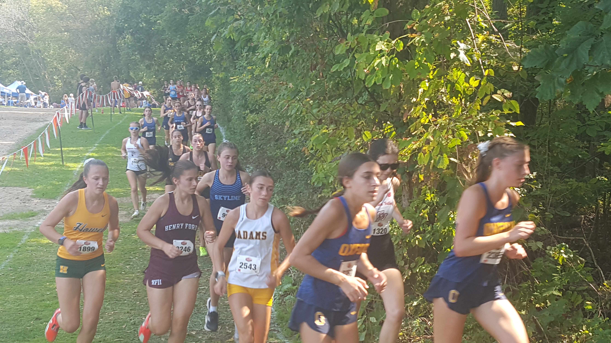
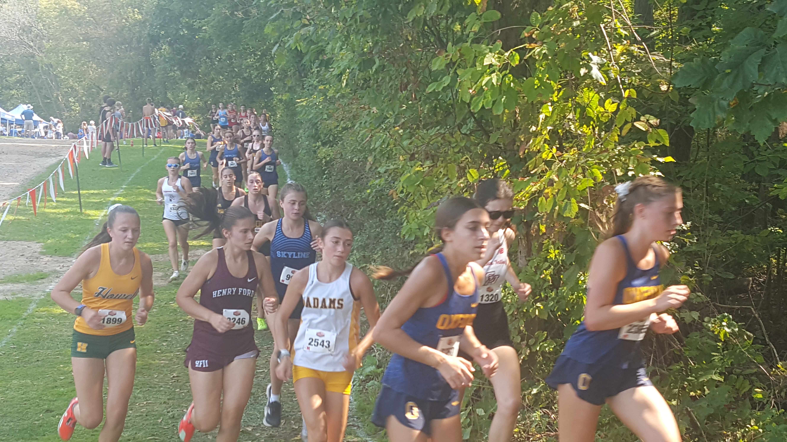

Race Summary
At the Bret Clements Bath Invitational on September 7, 2024, the Ann Arbor Skyline women's cross country team placed 6th overall with a score of 146. Top performers included Irie Scrase (20:04.61), Isla Tharp (20:34.25 PR), and Lila Edison (20:55.12 PR). Becca Van Lent (21:38.76 SR) and Ayla Balazer (21:55.86 SR) rounded out Skyline's top five runners. The team's spread was 1:51, reflecting strong efforts across the board.
Team Results
| Place | Team | Score |
|---|---|---|
| 1 | Chuck Block Timing | 45 |
| 2 | Saline | 76 |
| 3 | Northville | 78 |
| 4 | Okemos | 94 |
| 5 | DeWitt | 99 |
| 6 | White Lake Lakeland | 146 |
| 7 | Ann Arbor Skyline | 220 |
| 8 | East Lansing | 244 |
| 9 | Holly | 258 |
| 10 | Marian (Bloomfield Hills) | 311 |
| 11 | Fenton | 337 |
| 12 | Flushing | 348 |
Individual Results

Athlete Stats
Place: 11.
Time: 20:04.61
Grade: 10

Athlete Stats
Place: 22.
Time: 20:34.25
Grade: 10

Athlete Stats
Place: 33.
Time: 20:55.12
Grade: 9

Athlete Stats
Place: 43.
Time: 21:38.76
Grade: 10

Athlete Stats
Place: 49.
Time: 21:55.86
Grade: 12

Athlete Stats
Place: 52.
Time: 21:58.92
Grade: 10

Athlete Stats
Place: 58.
Time: 22:15.03
Grade: 10

Athlete Stats
Place: 62.
Time: 22:29.94
Grade: 9

Athlete Stats
Place: 67.
Time: 22:45.55
Grade: 11

Athlete Stats
Place: 72.
Time: 22:49.94
Grade: 10
Gallery
View Gallery


 
